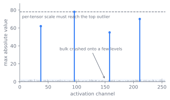
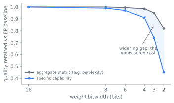

Quantization and Kernels
Decoding is bound by memory: by how many bytes of weights and cache must cross the bus per token, and by how many bytes of attention intermediates must be written and read back. This chapter is about two levers that attack that bound, shrinking the numbers with quantization and refusing to move the intermediates with fused kernels. By the end a reader can explain why GPTQ, AWQ, and SmoothQuant make different bets, why a model can run in INT4 or FP8 without falling over, why FlashAttention never materializes the score matrix, and why the choice among vLLM, SGLang, and TensorRT-LLM is a choice about which of these wins the engine has already made.
The memory wall
A weight in FP16 costs two bytes. A seventy-billion-parameter model is therefore one hundred and forty gigabytes before a single token is served, which already exceeds one accelerator. The serving problem of Chapter 16 and the scheduling of Chapter 17 both begin from this fact: capacity is spent on a static weight footprint and a growing key-value cache, and what is left bounds the batch.
The deeper trouble is bandwidth, not just capacity. Decoding emits one token at a time, so each step reads the whole weight set to produce a single column of activations. The arithmetic intensity is low, the accelerator's compute units idle, and wall-clock is set by how fast bytes move from high-bandwidth memory, not by how fast they multiply. Chapter 18 attacks this from the algorithm side by doing more useful work per pass. This chapter attacks it from below, by making each byte carry less and by moving fewer of them.
Attention has its own version of the same disease. The naive computation forms the full score matrix, writes it to memory, reads it back to apply softmax, writes again, and reads once more to weight the values. For a long sequence that matrix dwarfs the inputs, and the kernel spends its time on memory traffic rather than on the matmuls that matter. The architecture of Chapter 6 makes attention central, and Chapter 20 pushes the sequence length up, so the cost of moving these intermediates grows faster than the cost of the model itself.
Two levers answer this single enemy. The first shrinks each number so fewer bytes must move. The second refuses to write intermediates that will only be read back. The rest of the chapter takes them in turn, then shows that the serving regime picks between them and that an evaluation sitting one layer up quietly prices the whole trade.
Lever one: make each byte smaller
Quantization maps a high-precision tensor onto a small set of levels and stores the levels plus a scale. For integer quantization the rule is a scale and a round,
so a block of weights becomes -bit integers and one floating-point scale. The granularity of is the first design axis: one scale per tensor is cheapest to store and worst at handling spread, one scale per output channel or per small group of weights costs a little metadata and recovers most of the accuracy. Floating-point quantization keeps a sign, exponent, and mantissa in the small budget instead of a uniform grid, which trades some precision near zero for dynamic range, and the hardware can multiply the small format natively.
Why per-tensor INT8 breaks: the outlier
The reason quantization is not trivial is the outlier. Weights have a well-behaved distribution and quantize cleanly. Activations in a trained transformer do not: a few channels carry values orders of magnitude larger than the rest, and a single per-tensor scale chosen to cover them throws away all precision on the rest. This is why naive per-tensor INT8, carried over from vision models, collapses on large transformers once the emergent activation outliers appear past a certain scale. Every serious method is a different answer to the outlier. Figure 19.1 shows the geometry of the problem: a single per-tensor scale must stretch to cover the largest outlier channel, which spreads the integer grid so coarsely that the well-behaved bulk collapses onto a handful of levels.

Run the chapter's quantization rule on a well-behaved vector, then drop a single outlier into it and watch the scale stretch until the bulk error explodes.
import numpy as np
def quantize(w, bits=4):
s = np.max(np.abs(w)) / (2 ** (bits - 1) - 1)
return s * np.round(w / s), s
rng = np.random.default_rng(0)
bulk = rng.normal(0, 1, 64) # well-behaved channels
clean = bulk.copy()
spiked = bulk.copy()
spiked[0] = 60.0 # one emergent outlier channel
for name, w in [("no outlier", clean), ("one outlier", spiked)]:
q, s = quantize(w, bits=4)
err = np.abs(q[1:] - w[1:]).mean() # error on the bulk only
print(f"{name:12s} scale={s:6.2f} bulk mean abs error={err:.3f}")
Three answers to the outlier
GPTQ, AWQ, and SmoothQuant attack the outlier from three different angles, and the angle each chooses is what fixes its strengths and limits.
- GPTQ quantizes weights only, one layer at a time, and treats it as a reconstruction problem. It uses approximate second-order information, the Hessian of the layer's output error, to quantize weights column by column while updating the remaining full-precision weights to absorb the error just introduced (Frantar et al. 2022). This pushes the bitwidth to three or four bits per weight with little quality loss, and it touches activations not at all.
- AWQ also quantizes weights only, but starts from the observation that not all weights matter equally. Protecting roughly the top one percent of salient weight channels, identified by watching the activation magnitudes rather than the weights, removes most of the error. AWQ folds that protection into a per-channel scaling found by search, with no backpropagation and no reconstruction, so it does not overfit the small calibration set (Lin et al. 2023).
- SmoothQuant targets the harder regime where activations are quantized too. It applies a mathematically equivalent transformation that divides the activations by a per-channel factor and multiplies the weights by the same factor, migrating the difficulty out of the spiky activations and into the smooth weights (Xiao et al. 2022). After this smoothing, both can be taken to INT8, which unlocks integer matmuls for the whole layer, not just integer storage.
Two axes that organize the choices
That last distinction is the second design axis: weight-only versus weight-and-activation. Weight-only quantization (GPTQ, AWQ) shrinks the footprint and the bytes that decode must read, which is exactly the bandwidth-bound decode regime. It does not by itself speed the compute-bound matmuls of a large-batch prefill, because the activations are still high precision and the weights are dequantized before the multiply. Weight-and-activation quantization (SmoothQuant, FP8) lets the matmul itself run in the small format, which is what helps when compute, not bandwidth, is the bottleneck.
The formats are the alphabet these methods write in. INT8 and INT4 are uniform integer grids with a scale, cheap and well supported. FP8 comes in two NVIDIA-specified encodings, E4M3 with more mantissa for precision and E5M2 with more exponent for range, and is native on recent hardware so it accelerates the multiply itself (Micikevicius et al. 2022). GGUF is not a number format but a container: the file standard of the llama.cpp ecosystem, packing weights in block-wise "k-quant" schemes together with all metadata, so a quantized model is one portable file that runs on CPU and Apple silicon as readily as on a GPU (project 2023).
Lever two: stop moving the matrix
Fused kernels answer the memory-traffic half. FlashAttention computes exact attention without ever materializing the score matrix. It tiles the query, key, and value matrices into blocks that fit in fast on-chip SRAM, and it computes the softmax online: as each key block arrives it keeps a running maximum and a running normalizer, rescaling the partial output so the final result equals the full softmax without the full matrix ever existing (Dao et al. 2022).
The output never leaves SRAM until it is final, the matrix never touches high-bandwidth memory, and the backward pass recomputes blocks on the fly rather than storing them. This is the core trade the kernel makes: spend extra arithmetic to avoid memory traffic, which is the right trade precisely because attention was memory-bound. Figure 19.2 contrasts the two data paths: the naive kernel parks the full score matrix in high-bandwidth memory, while the fused kernel keeps every intermediate inside on-chip SRAM and lets only the final output return.
flowchart LR
subgraph HBM_naive["Naive attention in HBM"]
direction TB
QN["Q, K, V"] --> SC["full n by n score matrix"]
SC --> SM["softmax over full matrix"]
SM --> ON["weighted output"]
end
subgraph SRAM["FlashAttention on-chip in SRAM"]
direction TB
TILE["load Q, K, V tiles"] --> ONLINE["online softmax: running max m, normalizer l"]
ONLINE --> RESCALE["rescale partial output per key block"]
RESCALE --> TILE
RESCALE --> OUT["final output to HBM"]
end
HBM_naive -. "same exact result, far less traffic" .-> SRAMThe routing decision
The two levers compose into a single routing decision. The bottleneck the engine is fighting picks the quantization scheme, and the fused attention kernel then sits underneath whichever path is chosen, as Figure 19.3 lays out.
flowchart TD
A["FP16 weights and activations"] --> B{"What is the bottleneck?"}
B -->|"decode: bandwidth"| C["weight-only: GPTQ, AWQ"]
B -->|"prefill: compute"| D["weight + activation: SmoothQuant, FP8"]
C --> E["small footprint, fewer bytes read"]
D --> F["small-format matmul"]
E --> G["fused attention kernel: FlashAttention"]
F --> G
G --> H["serving engine: vLLM, SGLang, TensorRT-LLM"]Reading the regime off the bottleneck is the chapter's practical core. Bandwidth-bound decode favors weight-only GPTQ or AWQ; a compute-bound prefill or a throughput-first deployment favors FP8 or SmoothQuant so the matmul runs small; CPU and Apple silicon targets favor GGUF k-quants for portability; an NVIDIA production stack reaches for TensorRT-LLM to fuse and compile down to the hardware.
How the engines came to package this
Both levers reached today's form through a short, sharp history, and the serving engines are where the two tracks were finally wired together.
On the quantization side the story is driven by the outlier. The first wave of fixes isolated the outliers in higher precision while quantizing the rest. GPTQ (2022) then showed that careful second-order weight reconstruction reaches three to four bits with negligible loss, making weight-only low-bit serving practical (Frantar et al. 2022). SmoothQuant (2022) attacked the activation side by moving the difficulty into the weights, enabling full INT8 with reported speedups around one and a half times and memory roughly halved (Xiao et al. 2022). AWQ (2023) reframed weight-only quantization around salience and per-channel scaling, reporting more than threefold speedups over the FP16 baseline while avoiding the overfitting risk of reconstruction (Lin et al. 2023). The format frontier moved in parallel, from FP16 to INT8 to INT4 on the weight side, and to FP8 once hardware made the small float native (Micikevicius et al. 2022).
Kernels evolved on a separate track aimed at the same bound. FlashAttention established the IO-aware, never-materialize design (Dao et al. 2022). FlashAttention-2 rebalanced the work, parallelizing across the sequence dimension and reducing non-matmul operations to push utilization higher (Dao 2023). FlashAttention-3 targeted the Hopper generation specifically, overlapping the asynchronous tensor-core and memory engines and adding low-precision FP8 paths, so the kernel and the quantization story converged on the same hardware (Shah et al. 2024).
The engines packaged these advances into systems. FasterTransformer was the early hand-optimized baseline. vLLM made paged KV-cache management the centerpiece, treating cache memory like operating-system virtual memory to cut fragmentation, and it pairs that with quantized weights and FlashAttention-style kernels (Kwon et al. 2023). SGLang added RadixAttention to reuse shared prefixes across requests, which matters for the structured and agentic workloads of later chapters (Zheng et al. 2023). TensorRT-LLM is NVIDIA's compiler-driven engine, fusing kernels and selecting low-precision paths for its own hardware, distributed as an open repository rather than a paper (NVIDIA 2023).
The engines wire these together rather than reinventing them. vLLM exposes
quantization as a serving option over its paged cache (LLM,
vllm/entrypoints/llm.py) and dispatches attention to a FlashAttention
backend; SGLang layers prefix reuse on top
(RadixCache, python/sglang/srt/mem_cache/radix_cache.py); TensorRT-LLM
compiles a model definition into a fused, low-precision engine for a target
GPU (github.com/NVIDIA/TensorRT-LLM). The common pattern is the same:
calibrate or convert the weights once into a quantized artifact, load it into
an engine that already owns a fused attention kernel and a cache manager, and
serve.
What each lever costs
Every choice in this chapter spends one resource to buy another, and the right point depends on the serving regime, not on a universal best.
- Weight-only versus weight-and-activation. Weight-only quantization is the right tool for bandwidth-bound decode: it shrinks the footprint and the bytes read per token, and the matmul still runs in higher precision after dequantization. It does little for a compute-bound prefill. Quantizing activations too, with SmoothQuant or FP8, runs the matmul in the small format and helps the compute-bound regime, at the cost of confronting the activation outliers head-on.
- Granularity versus overhead. Finer scales, per channel or per small group, recover accuracy that per-tensor scaling loses, but each block carries its own scale and each matmul pays a dequantization step. Coarser is faster and smaller; finer is more accurate. The knee depends on how spread the tensor's values are.
- Precision versus capability. Lower bitwidth always reduces footprint and usually raises throughput, but it perturbs the model's outputs. How much that perturbation costs depends on what you measure, which is the subject of the constraint arrow below.
- Kernel arithmetic versus memory traffic. FlashAttention recomputes in the backward pass and does extra rescaling rather than store the score matrix. This is a net win only because attention was memory-bound; the same recompute would be wasteful on a compute-bound kernel.
The evaluation gate
The last trade-off, precision against capability, is the one that does not settle inside this chapter. It is paid one layer up, at evaluation, and the discipline of treating a quantized model as a model change is what keeps the saving real. Figure 19.4 sketches the concern that makes this gate matter: an aggregate metric can stay nearly flat as bitwidth drops while a specific capability falls away faster, and the gap between the two is exactly the cost a single perplexity number does not report.

Whether low-bit quantization preserves capability uniformly is unsettled. Aggregate metrics like perplexity often stay close to the full-precision baseline at four bits, which is why four-bit weight-only serving is common. But there is evidence that the damage is uneven: long-context recall, multi-step reasoning, multilingual coverage, and rare factual knowledge can degrade more than a perplexity number suggests, and the worst-hit cases may be exactly the capabilities a deployment cares about. The live questions are how far bitwidth can drop before specific capabilities break, whether weight-only and weight-and-activation schemes degrade the same skills, and whether the standard benchmarks even surface the loss. Treat "lossless at four bits" as a claim about an average metric, not a guarantee about a task.
Quantization trades numerical precision for footprint and speed, and the bill for that trade is paid one layer up, at evaluation. A quantized model is a different model: its logits are perturbed, and the only question that matters is whether it still produces the outputs that Chapter 28 measures. The footprint win is read off the weight file immediately; the capability cost is invisible until the benchmark and judging harness of Chapter 28 and Chapter 29 re-run on the quantized weights. A serving decision that looks like pure systems engineering is therefore gated by an evaluation that sits above it, and shipping a quantized model without that re-run is shipping an unmeasured model.
The operational caution is the one the arrow names. A quantized artifact is cheap to produce and easy to mistake for free. The footprint saving is real and immediate; the capability question is not answered until the evaluation of Chapter 28 re-runs on the quantized weights, not on the original. The discipline that keeps it rigorous is to treat every quantization recipe as a model change subject to the same measurement, and to record the format, the bitwidth, and the granularity alongside the scores so the trade is auditable.
Further reading
- Frantar et al., “GPTQ: Accurate Post-Training Quantization for Generative Pre-trained Transformers,” 2022. arXiv:2210.17323
- Lin et al., “AWQ: Activation-aware Weight Quantization for LLM Compression and Acceleration,” 2023. arXiv:2306.00978
- Xiao et al., “SmoothQuant: Accurate and Efficient Post-Training Quantization for Large Language Models,” 2022. arXiv:2211.10438
- Micikevicius et al., “FP8 Formats for Deep Learning,” 2022. arXiv:2209.05433
- Dao et al., “FlashAttention: Fast and Memory-Efficient Exact Attention with IO-Awareness,” 2022. arXiv:2205.14135
- Dao, “FlashAttention-2: Faster Attention with Better Parallelism and Work Partitioning,” 2023. arXiv:2307.08691
- Shah et al., “FlashAttention-3: Fast and Accurate Attention with Asynchrony and Low-precision,” 2024. arXiv:2407.08608
- Kwon et al., “Efficient Memory Management for Large Language Model Serving with PagedAttention” (vLLM), 2023. arXiv:2309.06180
- Zheng et al., “SGLang: Efficient Execution of Structured Language Model Programs,” 2023. arXiv:2312.07104
- NVIDIA, “TensorRT-LLM,” 2023. github.com
- project, “GGUF File Format,” 2023. github.com